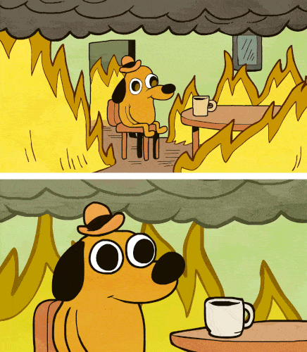
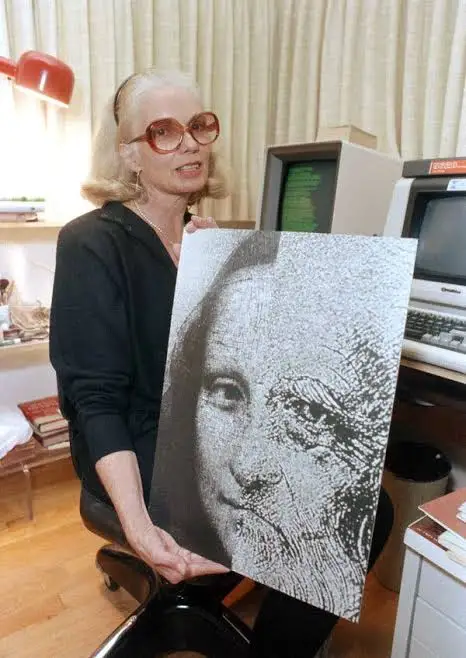

THE ART OF
CODING:
FINDING FLOW
IN FLUX
Curiosity as an Antidote to Tech Fatigue.

CS / Systems Engineer. Ruby Developer at Globant.
I love art and music. I love maths. I love memes. And I’m a professional collector of WhatsApp stickers.

The Overwhelmed Developer
"Curiosity isn't a distraction; it is the only way to survive the machine."
The "Overwhelmed Developer" syndrome. For Melissa, the code had stopped being a tool and became a prison of instructions.
The speed of change feels like a flood. In 2026, we are not just developers; we are survivors of the noise. When everything is changing, curiosity is the only thing that keeps us from drowning.
01.
THE
GRAMMAR OF WONDER
The Mathematical Substrate of the Dream. How simple instructions yield infinite complexity.
Kaprekar's Constant
D.R. Kaprekar discovered that if you take any 4-digit number (where not all digits are the same), arrange its digits in descending order, subtract the ascending order, and repeat the process, you will always reach exactly one number in at most 7 iterations.
02. THE ROOTS
Era: 1960 — 1975Conway's Game of Life
Gliders, Spaceships, Eaters. The cellular automaton proves that life-like complexity is an emergent property of binary states.
Rational Aesthetics
Computational art was born among cards and IBM 7090. Computers were cold mainframes. Pioneers like Lillian Schwartz didn't use screens, she layered graphics over film and used mechanical plotters.
If you knew the input, you knew the exact output. Every line was a choice, not a probability.


Vera Molnár
She introduced "Le 1% de désordre" — the idea that beauty emerges when you break the perfect algorithm. By introducing manual perturbations into rigid computer logic, she proved that machines could evoke organic, human sensitivity. She humanized the mainframe.
Harold Cohen
Harold Cohen spent 40 years coding a personality. AARON was a symbolic AI system—a "System Expert" that didn't learn from pixels, but followed the rules of human gesture. AARON and Symbolic AI. AARON didn't look at the world; it looked at Cohen's internalized rules of composition and form.


03. The Shift
"Control is no longer about exact pixels; it is about steering a statistical ghost."
Deterministic Era
- Instructions & Recipes.
- If / Else / Then.
- The Programmer as a Chef.
Probabilistic Era
- Inference & Tokens.
- Probability Distributions.
- The Programmer as an Orchestrator.
Algorithmic Evolution
DeepDream
Neural Hallucinations
GANs & Pix2Pix
The Game of Fakes
BigGAN
Diversity at Scale
Tokens & Models
Inference Flow
04. THE SYMPHONY
live_loop :pulse do
use_synth :tb303
play choose([48, 51, 55, 58]), release: 0.2
sleep 0.25
end
Music is the purest form of code. By bridging Gemini 3 Flash with Sonic Pi, we transform latent intent into visceral OSC signals.
More Easter Eggs
Curiosity is multiplayer. Below is a collection of rabbit holes, algorithmic art, and obscure technical wonders.
How This Guy Uses A.I. to Create Art | WIRED
youtube.com arrow_outward
DJ_Dave Hybrid Set for 808 on Twitch
youtube.com arrow_outward
How to Live Code an Orchestra • Sam Aaron
youtube.com arrow_outward
3Blue1Brown
youtube.com arrow_outward
Expand the Archive
Have a weird algorithm, a mathematical paradox, or an obscure piece of computing history? Found something that belongs here?
Open an Issue arrow_forward